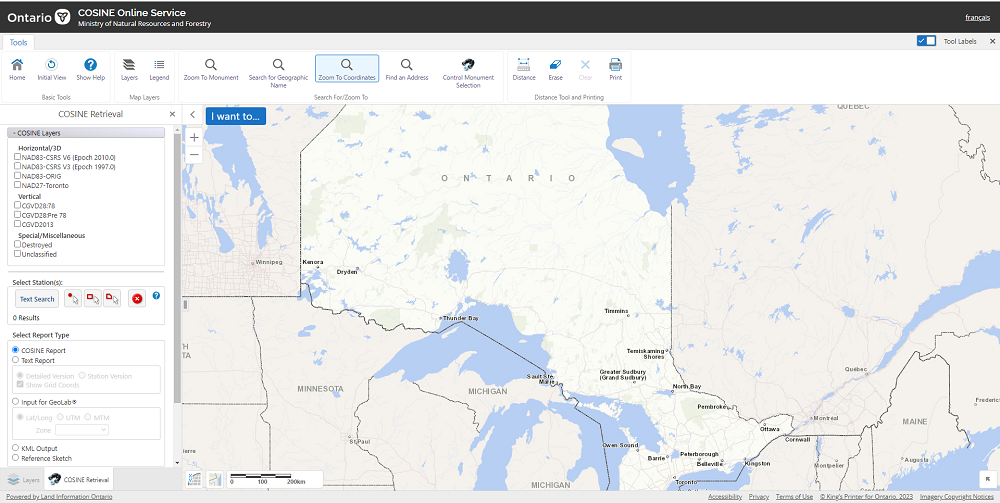
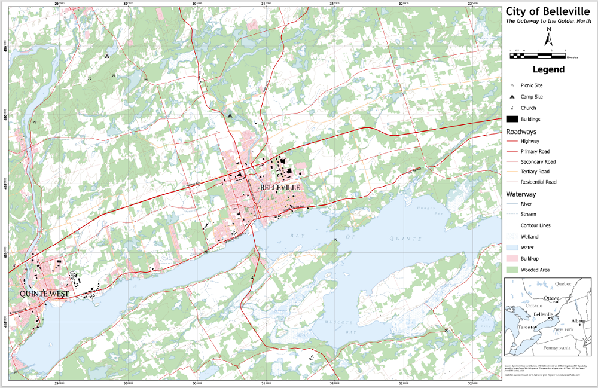

Geodesy
Overview
Geodesy is the science of measuring and representing the orientation of the Earth. Understanding how the curvature of the Earth is represented by different projections on a map. Acknowledge the issues involved in measuring and mapping of the Earth. Understand how projections work and how different countries and places use different projections.
Intended Learning Outcomes
- Understanding the relationship between real world distance and distances on a map.
- Scaling of a map can vary between large and small.
- Acknowledge the three methods to express map scale.
- Understand how COSINE (Control Survey Information Exchange) works and knowing the differences between vertical control and horizontal stations.
- Read a COSINE report.
- Complete a training module on how coordinate systems work with ESRI software.
- Understand how different projections affect the display of countries on a map.
- Different UTM zones across Canada.
- Knowing advantages and disadvantages of using the UTM system.
- Differentiate datums in Canada and classification of map projections.
Sequence of Class activities:
Assignment 1: To gain an understanding of how to differentiate Ontario Control Survey Markers across the province and knowing how to search these markers on the database called COSINE. Learn how to read and understand COSINE monument reports.
Assignment 2: This assignment allows a student to understand how to read National Topographic System map sheets and what principal digits are. How to locate a specific feature on a map from coordinates and measure distances between two features. Also, how to determine coordinates from a feature that is shown on a map.
Jackson's rendition of a NTS map of Belleville
The purpose of these assignments is to help us gain an understanding of how to read map sheets in person and digital maps online, determining coordinates from specific features and vice versa. Another purpose is to learn how to view different control markers found in Ontario and understanding how to read the reports.